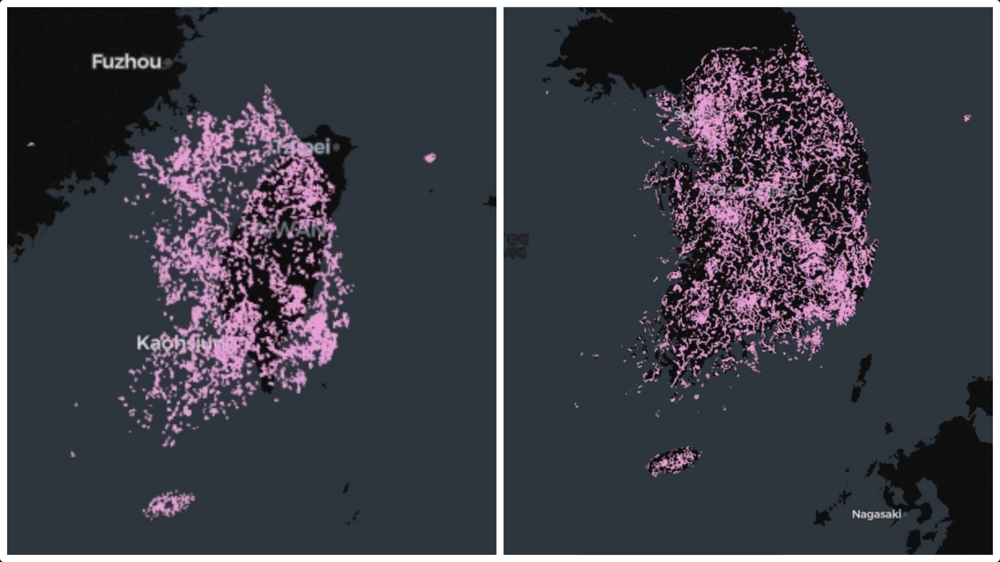

OSM 및 공공데이터 등산로 표준화 파이프라인의 좌표계 오류 및 병합 로직 결함

[증상] 시각화해서 확인했을 때 일부 등산로 선형이 한국 내륙을 벗어나 동해 바다 및 대만 인근에 찍히는 현상이 발생했습니다.
[원인 추적 및 해결] 처음에는 일부 데이터만 동해 바다에 나타나 병합 시 문제라고 생각했는데 문제가 있는 데이터의 출처가 모두 공공 데이터라는 것을 확인하고 좌표계 문제를 의심했습니다. 최종 원인은 원본 데이터가 GRS80 타원체 기반 TM 중부원점(20, 60) 투영 기준으로 설계되었음을 판명하고 코드 수정으로 바로 잡았습니다.
[예외 및 로직 고도화] 분석 중 발생한 음수 X축 값에 대해 False Easting 누락 오류로 오해하기 쉬웠으나, 실제 데이터 분포 조사 결과 백령도 지형의 예외적 특성임을 포착하여 수동 오보정을 방지했습니다. 또한 좌표계 정상화 직후 그동안 가려져 있던 'A단계 병합 로직 결함(공공데이터와 OSM 60% 중복 시 유효 속성을 이관하지 않고 OSM을 폐기하여 정보 손실 발생)'을 도출, 유효 속성 보존 가이드라인을 수립하고 통계 로그 보강을 완수했습니다.